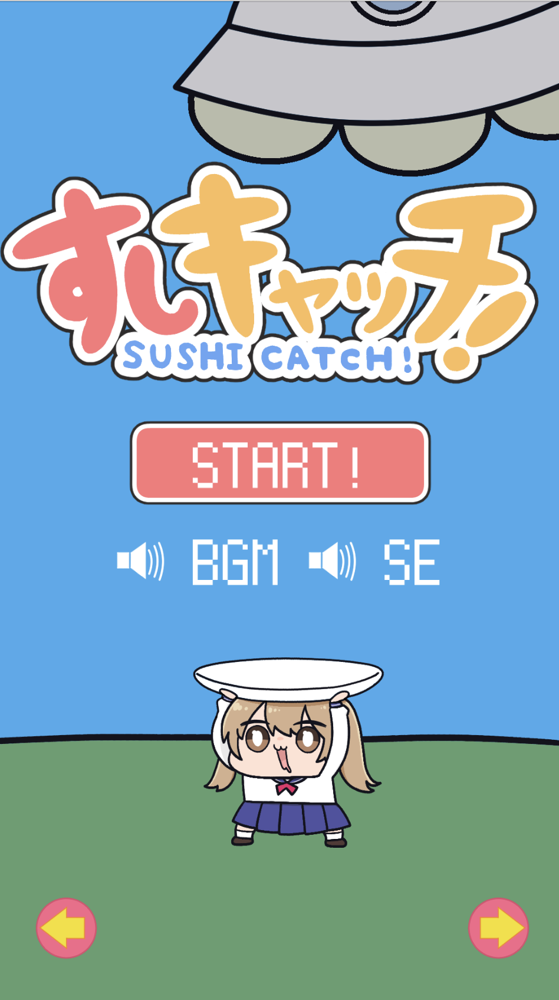
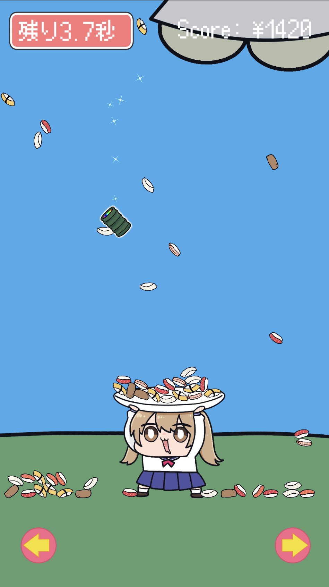

すしキャッチ
空から降ってくる寿司をキャッチするゲームを作りました。遊んでみてください。
初めての自作ミニゲームです。ぜひSNSなどで感想を聞かせてください。
ブラウザで遊ぶことができますが、iPhoneのブラウザには対応しておりません。
WindowsやMacなどのパソコンでブラウザを開いて遊ぶことをおすすめします。
配信場所
下記のいずれかのサイトで遊ぶことができます。
いずれも無料で遊ぶことができます。
ライセンス
ベストテンFont
Copyright (C) 2002-2021 M+ FONTS PROJECT
Copyright (C) 2021 FLOP DESIGN
The SIL Open Font License